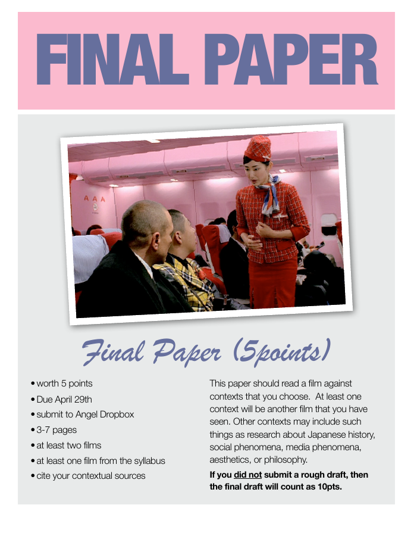
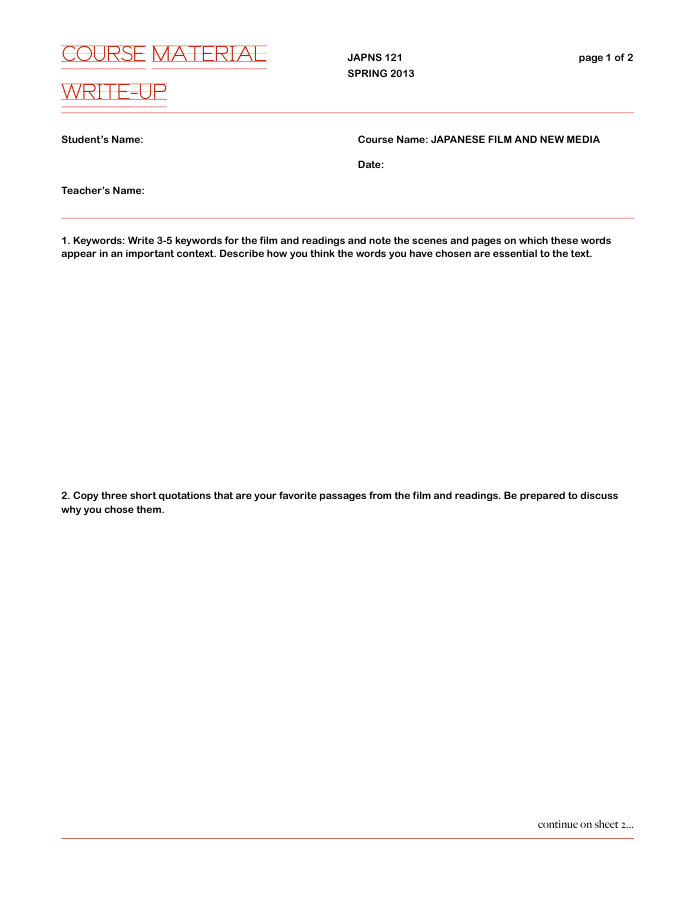
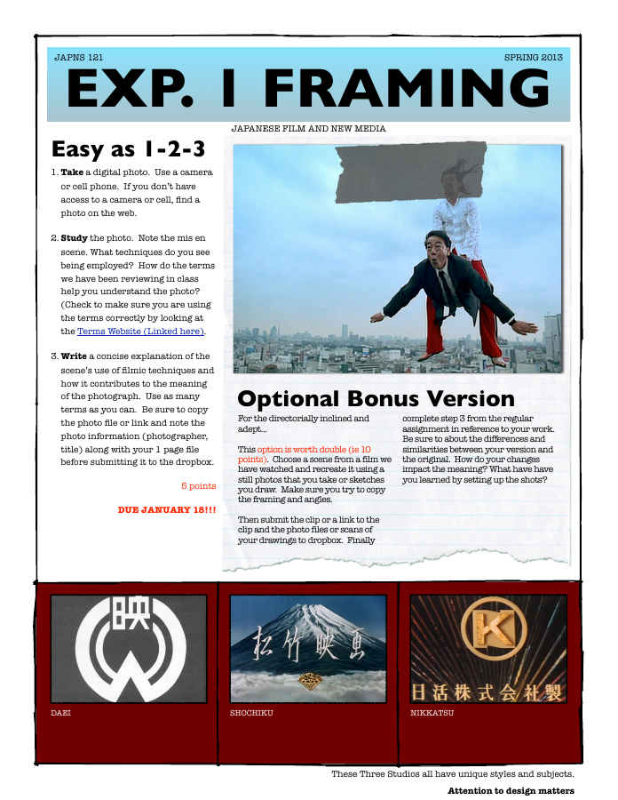
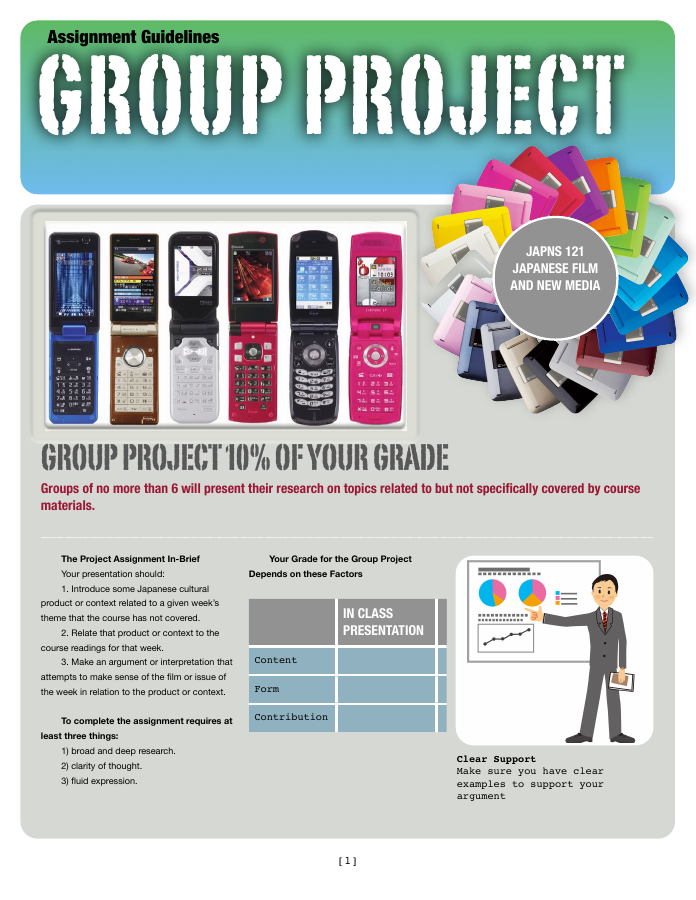
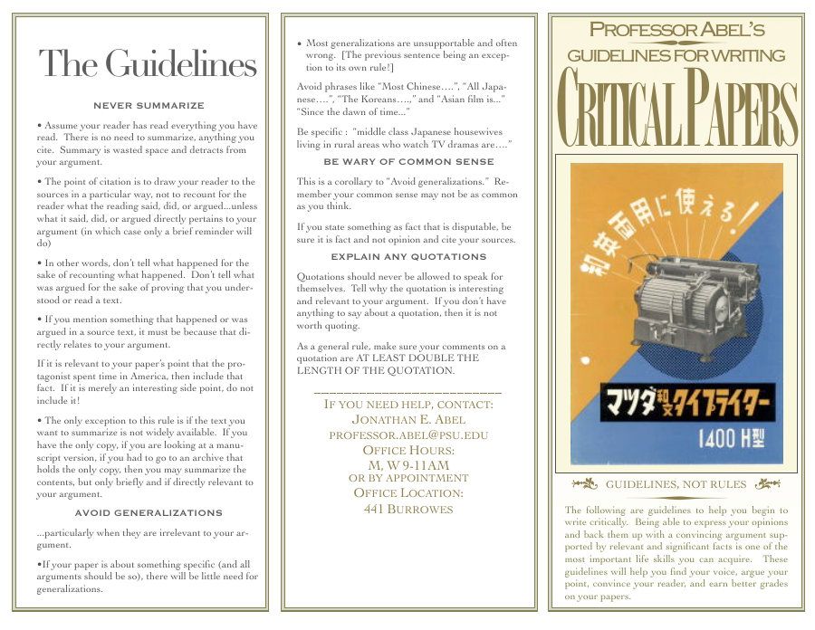

Docs


Final Paper Assignment
Docs

Course Material Write-UP Form
Four Experiments Assignment Sheets




The syllabus is in flux. Check here for most recent updates. Any printout is likely already out of date.
Updated Friday, January 9, 2015

Paper Guidelines
